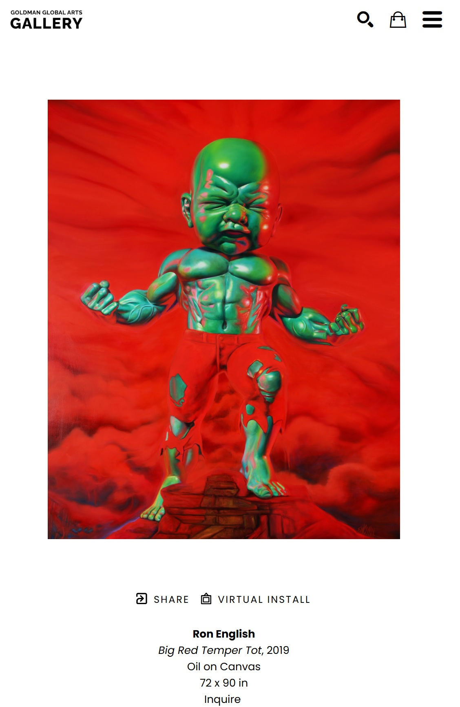

Notes
This work appears on GGA Gallery’s artwork page as Big Red Temper Tot, where it is listed as a 2019 oil on canvas measuring 72 × 90 inches, available here, accessed April 17, 2026.
This composition was later adapted by the artist as Temper Tot Rising, a blotter-paper edition measuring 7 1/2 × 7 1/2 inches (19.1 × 19.1 cm), issued as edition 75/75 and described on Artsy as part of a limited edition set, available here, accessed April 17, 2026.
Ancillary Documentation
